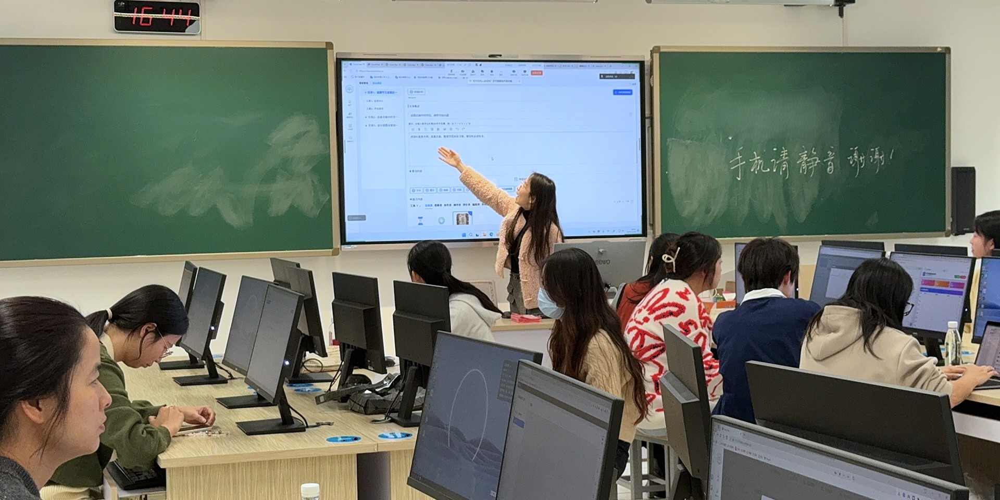

1 · Practice
How did we help teachers build and use agents?

TEACHER AGENCY · PRACTICE & RESEARCH
Helping teachers create AI agents and decide how those agents participate in learning.
OUR QUESTION
When AI can guide, assess and generate, teachers need to remain the pedagogical decision-makers.
How did we help teachers build and use agents?
What did we learn about competence and agency?
1 · PRACTICE / THE PROGRAMME
teachers reached across four Shenzhen districts and partner schools
Prompts and first agents
Subject communities and multi-agent workflows
Design traces and sustained engagement
Each round informed the next round of training and platform design.
1 · PRACTICE / HOW WE ORGANIZED SUPPORT
Coordinate workshops and shared priorities.
Develop seed teachers and follow-up support.
Discuss examples and exchange design feedback.
Try agents, examine use and revise the design.
Teachers repeatedly build, test, share and redesign.
1 · PRACTICE / A CLASSROOM EXAMPLE

Support diagnosis and refine an inquiry design.
Define the support the agent may provide.
Develop the explanation and make the final judgment.
The agent supports exploration without supplying the final answer.
1 · PRACTICE / TWO MORE EXAMPLES

AI expands practice and feedback.
Teachers retain the criteria and final judgment.

AI provides learning scaffolds.
Teachers protect students’ own cognitive work.
Across subjects, teachers decide what AI contributes and what people retain.
2 · RESEARCH / THE EVIDENCE BASE
systematically studied cohorts in Pingshan
Agent artifacts, workflow configurations and revisions
Platform logs and patterns of engagement
Surveys, presentations and interviews
These data support analysis of teacher learning and participation; they do not establish causal student learning gains.
2 · RESEARCH / FINDING 1
Teachers turn teaching judgments into runnable designs that can be tested and revised.
Specify the agent’s role, sequence and limits.
Use tests and design revisions to inspect the pedagogy.
AI-TPACK can be examined in design traces, alongside teachers’ self-reports.
2 · RESEARCH / FINDING 2
Build and revise
Observe and explore
Rarely participate
Training alone does not ensure continued creation.
The studies point to autonomy, competence, relatedness and school support as conditions for sustained engagement.
2 · RESEARCH / AN EMERGING FRAMEWORK
Where is AI useful, and where is human effort essential?
Does a problem come from the prompt, workflow or model?
Which decisions belong to teachers, students or peers?
Turn these judgments into roles, limits and timing.
A working synthesis of teacher judgment, still under development.
2 · RESEARCH / DESIGN IMPLICATIONS
Require a student attempt before feedback.
Use peer critique before AI-assisted revision.
Constrain or pause AI to restore dialogue.
Teachers need the authority to delay, constrain or remove AI participation.
WHAT THIS MEANS FOR PROFESSIONAL LEARNING
Teachers build, test and revise pedagogical agents.
Use artifacts and traces alongside self-report.
Provide time and peer support; allow teachers to limit AI.
THE TAKEAWAY
Can teachers decide when AI should step forward—and when it should step back?